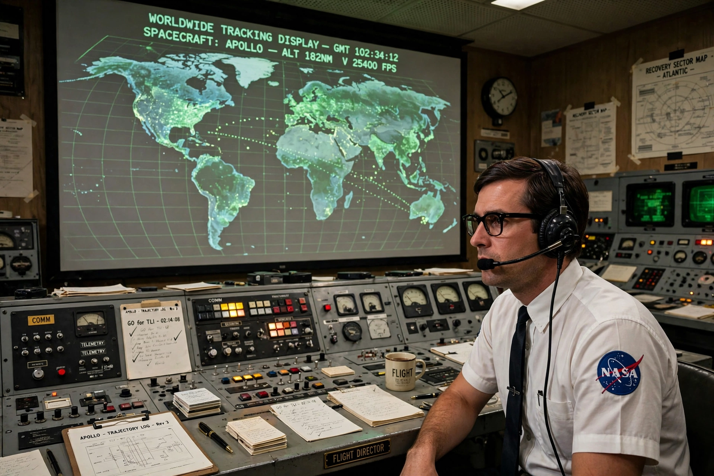

Christopher C. Kraft Jr.
From Wikipedia, the free encyclopedia
| Christopher C. Kraft Jr. | |
|---|---|
| Born | 28 February 1924, Phoebus, Virginia |
| Died | 22 July 2019 (aged 95) |
| Role | NASA's first flight director; director of Johnson Space Center (1972–82) |

Kraft at the console.Christopher Columbus Kraft Jr. (1924–2019) was an American aerospace engineer who essentially invented Mission Control: as NASA's first flight director he created the concepts of real-time flight operations, the flight director's absolute authority during missions, and the controller disciplines that governed Mercury, Gemini and Apollo. The Mission Operations Control Room concept — specialists on consoles, one voice — was Kraft's design, adapted from flight-test practice at NACA Langley.
Kraft directed John Glenn's orbital flight and every Mercury mission after, served as flight director through Gemini, then moved up to direct manned spaceflight at Houston, overseeing Apollo planning; as centre director from 1972 he shepherded the Space Shuttle into service. His name is on the control centre at Johnson Space Center — the Christopher C. Kraft Jr. Mission Control Center.
Temperament
Kraft's management philosophy — trust specialists, decide fast, and never let a committee fly a spacecraft — was forged in crises like Mercury-Atlas 6's false landing-bag signal. His memoir Flight: My Life in Mission Control (2001) is the standard account of how NASA's operations culture was built; he was still publicly arguing for it, sharply, into his nineties.